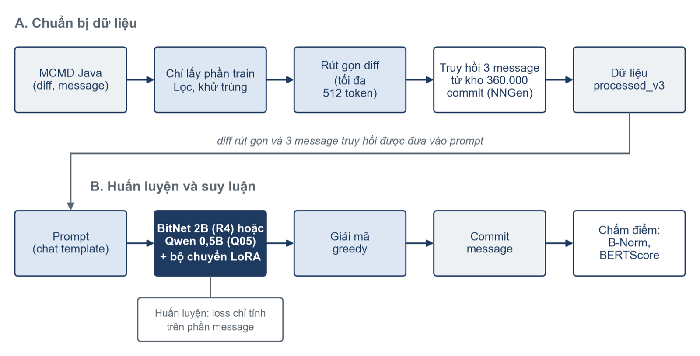
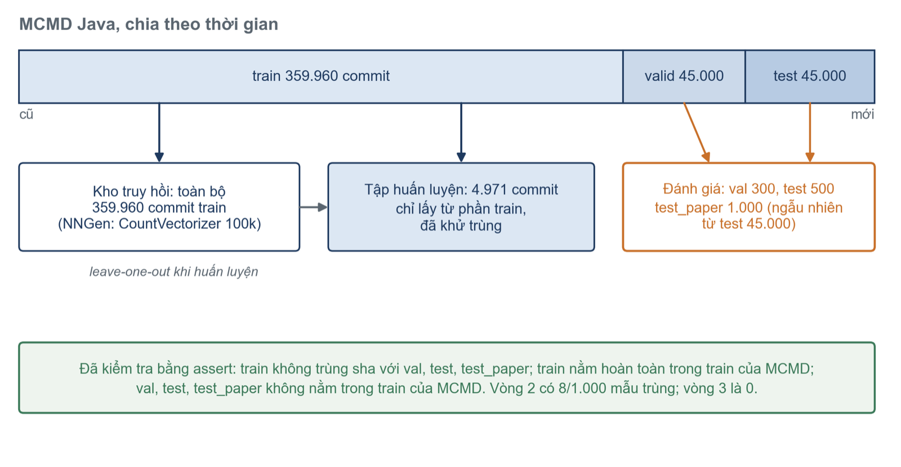
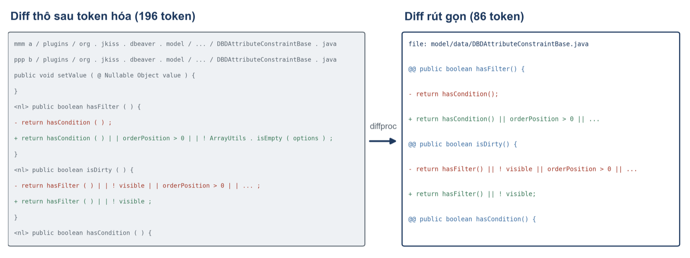
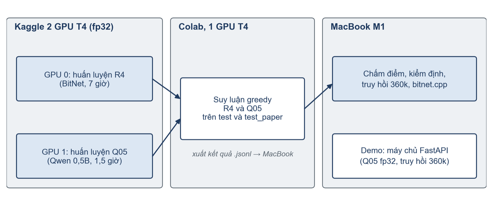
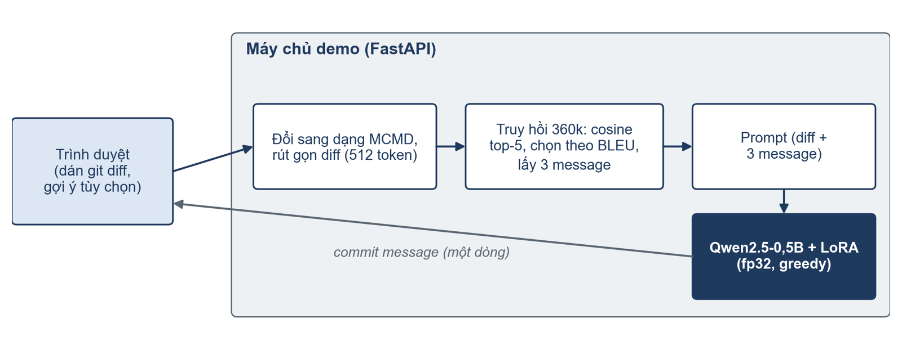

Lịch sử commit
Là tài liệu sống của dự án. Lập trình viên đọc message trước khi đọc mã khi tìm lỗi hay tiếp quản mô-đun.
01 — Mở đầu
Đề án môn Công nghệ phần mềm tiên tiến · Nhóm 4
BitNet b1.58 2B4T và Qwen2.5-0.5B trên MCMD
Ba vòng thí nghiệm, chấm bằng B-Norm đã hiệu chuẩn, kiểm định Wilcoxon + Holm và khoảng tin cậy bootstrap.
Chương 01
Lý do
Là tài liệu sống của dự án. Lập trình viên đọc message trước khi đọc mã khi tìm lỗi hay tiếp quản mô-đun.
Tốt nhưng tốn chi phí, có độ trễ, và mã nguồn doanh nghiệp phải rời khỏi máy cá nhân.
BitNet b1.58 chỉ có trọng số −1, 0, +1, nên bộ nhớ và năng lượng giảm rõ so với mô hình cùng cỡ.
Câu hỏi cụ thể: tinh chỉnh các mô hình nhỏ (BitNet b1.58 2B4T, Qwen2.5-0.5B) bằng LoRA trên ít dữ liệu và hai GPU T4 miễn phí thì sinh commit message Java tốt đến đâu so với truy hồi cổ điển, và chạy trên MacBook tốn bao nhiêu?
Mục tiêu
LoRA có giúp mỗi mô hình (BitNet, Qwen) tốt hơn chính nó khi chưa tinh chỉnh và tốt hơn NNGen, kể cả NNGen đủ 360 000 commit? Hai mô hình so với nhau ra sao?
Độ trễ và bộ nhớ trên máy cá nhân thay đổi ra sao theo kiểu đầu vào: diff thô, rút gọn, kèm truy hồi, few-shot?
Vòng 1, 2 chỉ dùng BitNet; Qwen vào ở vòng 3. Tiêu chí đặt trước chỉ áp cho R4, so sánh có Qwen mang tính khám phá.
Tổng quan
Điền tên hàm, loại thay đổi vào khuôn. Đúng định dạng nhưng nghèo ý nghĩa.
Jiang và cộng sự (2017), CoDiSum, pointer-generator. Cần nhiều dữ liệu.
Lấy message của diff giống nhất. Vượt NMT, nhanh hơn nhiều, thành baseline bắt buộc.
Đưa commit tương tự vào mô hình sinh. Cơ sở cho cấu hình R3, R4 của đề án.
Đánh giá (Tao và cộng sự, MCMD): chia ngẫu nhiên làm điểm cao hơn thực tế, nên chia theo thời gian; BLEU có nhiều biến thể, nên dùng B-Norm. Đề án áp dụng cả hai.
Cơ sở lý thuyết
BitNet b1.58 2B4T
BitLinear chia trọng số cho trị tuyệt đối trung bình, làm tròn về {−1, 0, +1}; kích hoạt 8 bit. Nhân ma trận quy về cộng, trừ. 2 tỷ tham số, 4 nghìn tỷ token.
Tinh chỉnh trong PyTorch vẫn tính ở độ chính xác cao: lợi ích tốc độ chỉ có khi suy luận bằng bitnet.cpp.
LoRA
r = 16, α = 32, áp cho 7 ma trận chiếu (q, k, v, o, gate, up, down).
Chương 02
Tổng quan quy trình vòng 3

Dữ liệu MCMD Java, chia theo thời gian

5 580 thô → 4 978 lọc → 4 971 khử trùng. Chỉ từ phần train.
Không sha nào trùng giữa train và val, test, test_paper.
Lấy đều từ test 45 000, không lọc: đại diện phân bố gốc.
Tiền xử lý

Tỉ lệ diff vẫn bị cắt chỉ giảm từ 31.9% xuống 24.9%: commit rất lớn vẫn vượt ngân sách.
Truy hồi NNGen trên 359 960 commit
# system You write git commit messages. # user Commit messages of similar past changes (for style reference): - {message truy hồi 1} - {message truy hồi 2} - {message truy hồi 3} Write a one-line commit message (imperative mood, at most 15 words) for this Java diff. <diff> {diff đã rút gọn} </diff>
CountVectorizer 100k từ, 5 ứng viên cosine, chọn theo BLEU.
Khi dựng train, bỏ chính commit và diff trùng hệt (13.7% mẫu) để mô hình không thấy đáp án.
Message NNGen chọn: 10.94. Ứng viên tốt nhất trong 5: 17.96 (test_paper).
Kaggle 2 × T4, fp32, batch 1 × 16 bước tích lũy
| R1 | R2 | R3 | R4 (chính) | Q05 | |
|---|---|---|---|---|---|
| Vòng | 1 | 2 | 2 | 3 | 3 |
| Mô hình nền | BitNet 2B | BitNet 2B | BitNet 2B | BitNet 2B | Qwen 0.5B |
| Đầu vào | diff thô, 1024 | rút gọn, 512 | rút gọn, 512 | rút gọn, 512 | rút gọn, 512 |
| Truy hồi | không | không | 2 msg, kho 5k | 3 msg, kho 360k | 3 msg, kho 360k |
| Mẫu train | 3 000 | 5 000* | 5 000* | 4 971 | 4 971 |
| Epoch / bước | 1 / 188 | 2 / 626 | 2 / 626 | 2 / 622 | 2 / 622 |
| Giây / bước | 65–72 | 32.6 | 33.0 | 40.36 | 8.93 |
| VRAM đỉnh | 12.2 GB | 11.2 GB | 11.3 GB | 11.4 GB | 3.7 GB |
* Tập train vòng 2 có rò rỉ nhỏ (mục 5.5); vòng 3 dùng tập sạch. Chung cho cả 5 lượt: LoRA r = 16, α = 32, dropout 0.05, lr 2e-4, loss chỉ tính trên message. R4 ~7 giờ, Q05 ~1.5 giờ, chạy song song.
Baseline khớp ngân sách
Để người khác tin được con số
B-Norm khớp bài báo gốc trước mọi so sánh.
Test 500 để chọn cấu hình; test_paper 1 000 để báo cáo.
Cùng đầu vào, runtime, script chấm; kiểm định theo cặp, Holm.
Tiêu chí chốt trước vòng 3: R4 hơn NNGen 360 000 ít nhất 1.0 điểm B-Norm trên test_paper, khoảng tin cậy 95% không chứa 0, và p Holm < 0.05. Tiêu chí chỉ áp cho R4; so sánh có Qwen mang tính khám phá, vẫn báo cáo đủ.
Hạ tầng miễn phí

bitnet.cpp trên ARM: GGUF xuất từ x86 cho kết quả vô nghĩa, phải lượng tử hóa lại ngay trên máy ARM.
Chương 03
5.1 · Bộ chấm điểm
Chấm lại đầu ra do Tao và cộng sự công bố: NNGen 10.73 · NMT 9.49 (gốc 9.50) · PtrGNCMsg 13.30 · CommitGen 8.08. Hai khoảng tin cậy chồng nhau, cách 10.73 chưa đến 1 điểm, nên test_paper được xem là đại diện.
5.2 – 5.3 · B-Norm, giải mã greedy
Chưa khác biệt (p Holm ≥ 0.76). 62% đầu ra mở đầu bằng “fix”, tham chiếu chỉ 18%.
R3 hơn N0 2.80 điểm (p Holm 9e-5). Truy hồi kho 5k chưa giúp rõ: R3 − R2 = +0.53 (p = 0.47).
5.4 · Kết quả âm
| Hệ | B-Norm | METEOR | ROUGE-L | BERTScore | Mở đầu “fix” | Độ dài (từ) |
|---|---|---|---|---|---|---|
| R2 greedy | 9.38 | 10.99 | 13.61 | 84.96 | 40.2% | 7.2 |
| R2 beam + MBR | 9.75 | 13.39 | 12.82 | 84.66 | 12.2% | 9.9 |
| R3 greedy | 9.91 | 12.29 | 13.36 | 85.33 | 37.4% | 7.3 |
| R3 beam + MBR | 9.69 | 13.51 | 11.79 | 84.86 | 11.4% | 9.4 |
Không cặp nào khác nhau về B-Norm (p Holm = 1.0). Độ dài gần tham chiếu (9.5 từ), METEOR tăng nhưng ROUGE-L giảm; 78/500 đầu ra của R3 beam là bản sao message truy hồi.
5.5 · Lỗi của chính nhóm
Lấy mẫu từ cả 3 phần MCMD rồi chia lại: 195/5 000 commit train đến từ test; 8 mẫu test_paper trùng train.
Trên 8 mẫu: NNGen 5k chép 100.0, R3 41.0, R2 chỉ 10.6. Bỏ 8 mẫu: R3 giảm ~0.25; thứ hạng không đổi.
Train sạch 4 971 commit chỉ từ phần train, assert xác nhận 0 sha trùng.
Bài học: lấy mẫu rồi chia lại dữ liệu có sẵn thì phải kiểm tra sha giữa các tập, không chỉ tin nhãn chia ban đầu.
5.7 · Tập đại diện test_paper, 1 000 mẫu
R4 − NNGen 360k = +1.85 (KTC 95%: 1.00 – 2.64) · Cliff δ = 0.11 (mức nhỏ) · một hạt giống.
Họ 6 hệ, 15 cặp, Holm
| Cặp so sánh | Chênh lệch | KTC 95% | p Holm | Cliff δ |
|---|---|---|---|---|
| R4 – NNGen 360 000 | +1.85 | 1.00 – 2.64 | 7e-12 | 0.11 |
| Q05 – NNGen 360 000 | +2.58 | 1.62 – 3.52 | 9e-19 | 0.18 |
| R4 – NNGen 5 000 | +6.35 | 5.14 – 7.56 | 7e-38 | 0.31 |
| R4 – R3 | +3.16 | 2.01 – 4.32 | 1e-5 | 0.09 |
| R4 – B1t | +3.62 | 2.49 – 4.76 | 2e-8 | 0.13 |
| Q05 – R4 | +0.73 | −0.16 – 1.65 | 0.005 | 0.07 |
| R3 – NNGen 360 000 | −1.31 | −2.56 – −0.10 | 0.74 | 0.03 |
Hai hàng cuối: bootstrap và Wilcoxon mâu thuẫn do điểm câu có đuôi dài, nên không kết luận Q05 hơn R4 trên test_paper.
5.6 · Test 500 mẫu (họ 7 hệ, 21 cặp, Holm)
5.8 – 5.9
5.13 · B-Norm, test_paper và test 500
| Mô hình | Tập | Chưa tinh chỉnh | + truy hồi, chưa tinh chỉnh | Sau tinh chỉnh |
|---|---|---|---|---|
| Qwen2.5-0.5B | test_paper | 8.12 | 8.34 | 13.47 |
| Qwen2.5-0.5B | test 500 | 7.82 | 7.44 | 11.46 |
| BitNet 2B | test_paper | 8.29 | 7.94 | 12.73 |
| BitNet 2B | test 500 | 7.12 | 7.04 | 10.17 |
Qwen +5.35 (p Holm 6e-30), BitNet +4.45 (p Holm 8e-12) trên test_paper; trên test 500, R4 hơn B0r +3.14 (p Holm 4e-7). Hai mô hình gốc gần như ngang nhau: khoảng cách Q05 – R4 chỉ xuất hiện sau tinh chỉnh. Ba hệ chưa tinh chỉnh đều dưới NNGen 360k.
RQ2 · MacBook M1, bitnet.cpp, 4 luồng, 50 mẫu
Thanh: p50 · vạch đứng: p95.
5.11 · Hai phương án

ONNX 4 bit + WebGPU, 555 MB. Điểm tụt từ 11.33 xuống 8.14 (không truy hồi).
Q05 fp32 + chỉ mục 360k. 3–11 giây/lượt; khớp dự đoán đã chấm 10/10 mẫu.
5.12 · Tập test, hệ vòng 2
| Tham chiếu | R3 | B1t | N0 |
|---|---|---|---|
| = remove unused import | Remove unused imports | Fix NPE in Aviater regex filter and update MySQL event parser | add setAlarmHandler for otter |
| fix travis - ci failed problem . | fix travis - ci failed problem | Fix travis ci failed problem by setting time zone in DownloadUtilsTest . | fix log path error . |
| ServletServerHttpResponse reflects Content - Type override | Fix for Content - Type override | Ensure headers are set correctly in response | Respect existing content - length for HTTP HEAD |
| Ordering check fixed | fixes | Check if attribute has filter condition in DBDAttributeConstraintBase . | Transaction manager refactoring . Session logging is in interface |
Tỉ lệ mở đầu “fix”: R1 62% → R2 40.2% → R3 37.4% (tham chiếu 17.4%). Đầu ra greedy vẫn ngắn hơn tham chiếu (7.3 so với 9.5 từ).
Chương 04
5.14
Thay đổi quyết định là kho truy hồi 5k → 360k và train sạch, không phải kiến trúc.
Q05 nhỏ hơn 4 lần nhưng bằng hoặc hơn R4.
Trên phần không chép, cả hai mô hình vẫn hơn NNGen.
Truy hồi một mình không giúp mô hình chưa huấn luyện.
6.3
Chưa có phương sai khi huấn luyện lại.
R4 – R3 khác hai yếu tố; chưa có Q05 không truy hồi.
4 971 commit; ~25% diff vẫn bị cắt ở 512 token.
Chưa đo LoRA trong bitnet.cpp.
Chưa thử mô hình chuyên về mã.
Chỉ độ đo tự động.
6.4
Có phương sai và tách được phần đóng góp của truy hồi.
Train sạch + kho 5k, hoặc train cũ + kho 360k.
Ứng viên tốt nhất trong 5 đạt 17.96 so với 10.94 của NNGen.
Trả lời đầy đủ câu hỏi triển khai.
6.1 – 6.2
Đóng góp: lợi ích của mô hình sinh so với NNGen phụ thuộc mạnh vào kho truy hồi và độ sạch dữ liệu. Kèm quy trình đánh giá có hiệu chuẩn, baseline khớp ngân sách, chốt tiêu chí trước, đối chứng và phân tích rò rỉ; demo chạy được; mã, cấu hình, kết quả lưu để tái lập.
Nhóm 4 · Công nghệ phần mềm tiên tiến
Bản đọc đầy đủ có toàn bộ bảng số, kiểm định, tài liệu tham khảo và phụ lục prompt.
Mở DeAn_NoiDung.htmlXoay ngang để xem rõ hơn